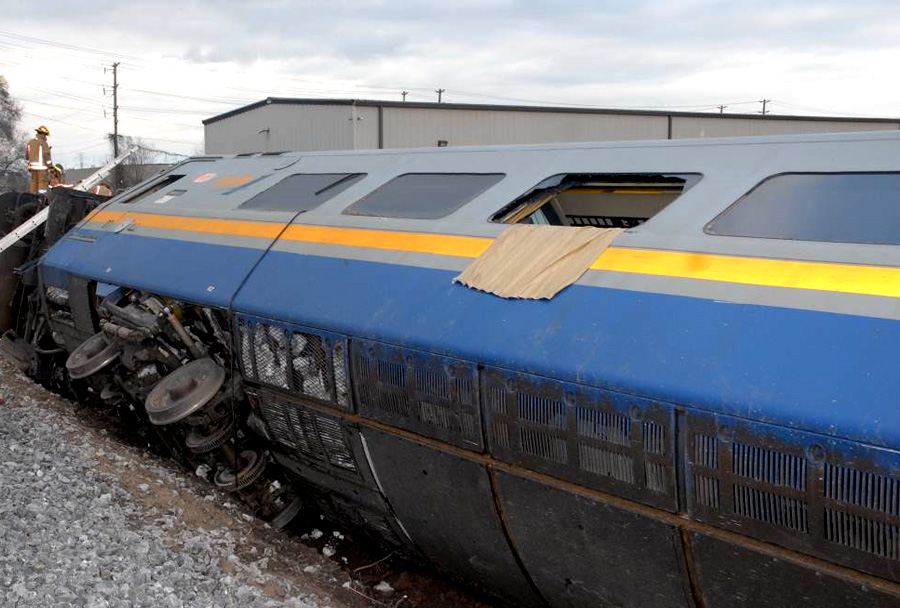

열차가 자동차나 트럭과 추돌하는 사고는 주로 기관실 앞쪽에서 발생하지만 충격 여파로 열차의 중간 지점에서 탈선이 일어나기도 합니다.
그 외에도 변압기 고장과 같은 기계적 문제로 비탈이나 커브에서 탈선 사고가 발생할 수 있습니다.
약간 기울거나 흔들린 객실에서는 부상자와 노약자를 부축해 안전한 다른 객실로 대피합니다.
객차간 통로가 파손되었거나 심하게 기운 객차에서 직접 탈출하는 경우, 승강문 비상개방이 불가능하면 비상창문을 찾아야 합니다.
핸들을 잡아당기면 패킹이 벗겨져 유리창을 떼어낼 수 있는 비상창문도 있고, 창문을 깰 수 있도록 비상 망치가 비치되어 있는 경우도 있습니다.
고속열차의 다른 창문들은 충격방지 유리라서 사람의 힘으로는 깰 수 없습니다.
반대편 선로에 다른 열차가 오지 않는지 확인하고 자세를 낮춰 뛰어 내립니다. 비상창문을 깼을 때는 창틀과 땅바닥에 담요나 두꺼운 옷을 깔아 유리조각에 손발이 찔리지 않도록 합니다.
